StCFSD 독립 프로그램
화면 템플릿 10장 · 2026-11-22 · 정적 화면이고 동작은 없다 · 수치는 모두 예시 · 틀은 StAnal 템플릿을 따랐다
세 가지 약속
| 왼쪽은 트리 | 탭 4개(업무 · 모델 · 결과 · 문서). 한 줄에 이름과, 오른쪽 끝에 개수 · 값 · 상태. 고르면 가운데와 오른쪽이 따라온다. |
| 오른쪽은 읽는 곳 | 고른 것의 값 · 출처 · 근거 · 영향만 보인다. 답 · 수정 · 요청은 Claude Desktop 대화창에 말로 한다. 아래 한 줄 「Claude 가 보는 선택」. |
| 설명은 풍선 도움말 | 화면에 안내 문장을 쓰지 않는다. 마우스를 올리면 뜬다. |
단추는 사람만 하는 일뿐이다: 확인 표시, 발행, 편집 상태(F2), Claude 「연결」.
화면
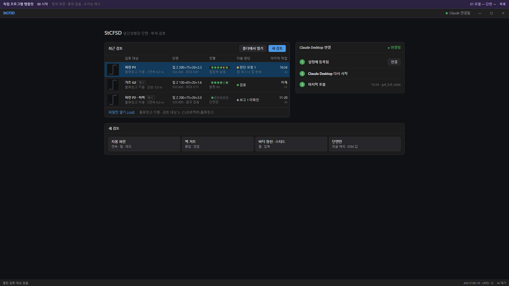
00 시작최근 검토 · 새 검토 · Claude 「연결」 세 단계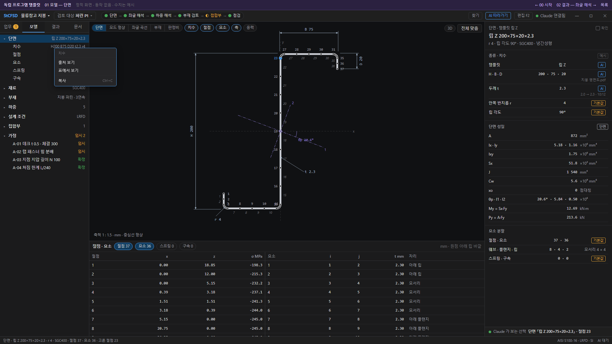
01 모델 — 단면치수 · 절점 · 요소가 겹친 단면 보기, 절점 · 요소 표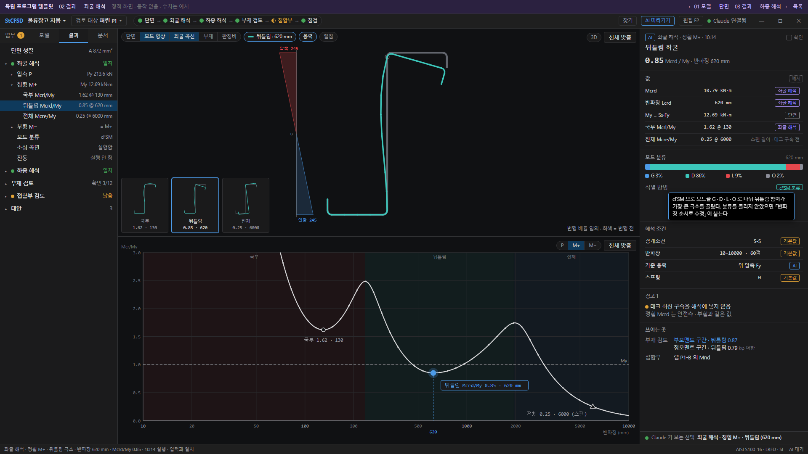
02 결과 — 좌굴 해석뒤틀림 모드 형상 위, 좌굴 곡선 아래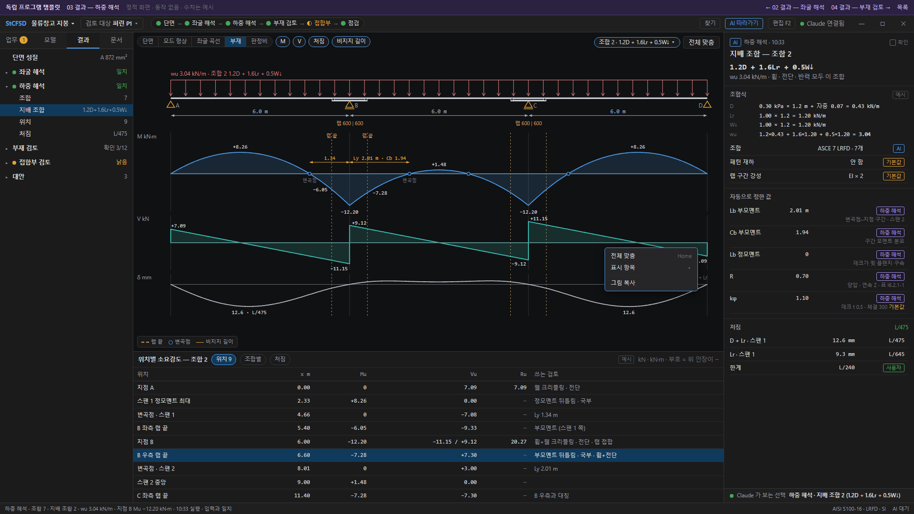
03 결과 — 하중 해석3연속 보 · M · V · 처짐 · 랩 끝 · 비지지 길이, 위치별 표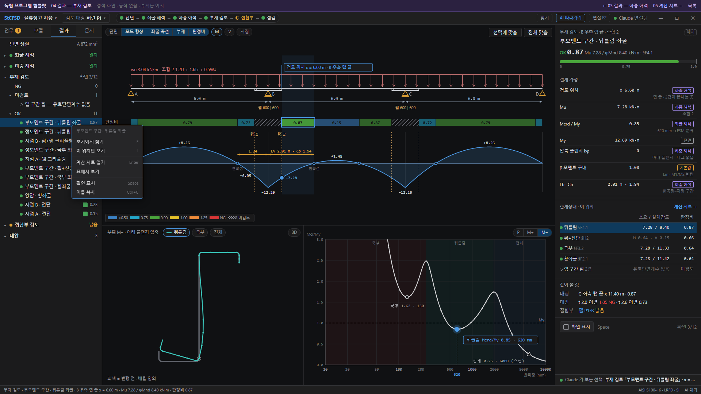
04 결과 — 부재 검토판정비 띠 · 단면 모드 · 좌굴 곡선, 설계 가정과 출처, 트리 우클릭 메뉴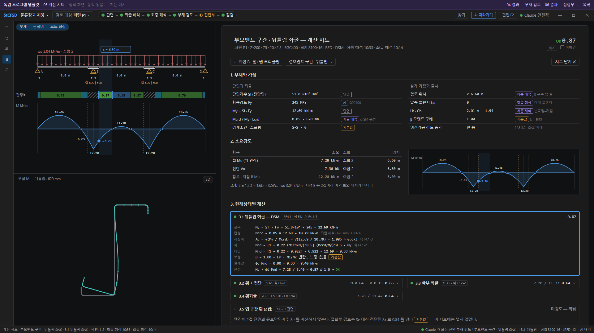
05 계산 시트식 번호 · 대입 · 결과 · 「미검토 — 까닭」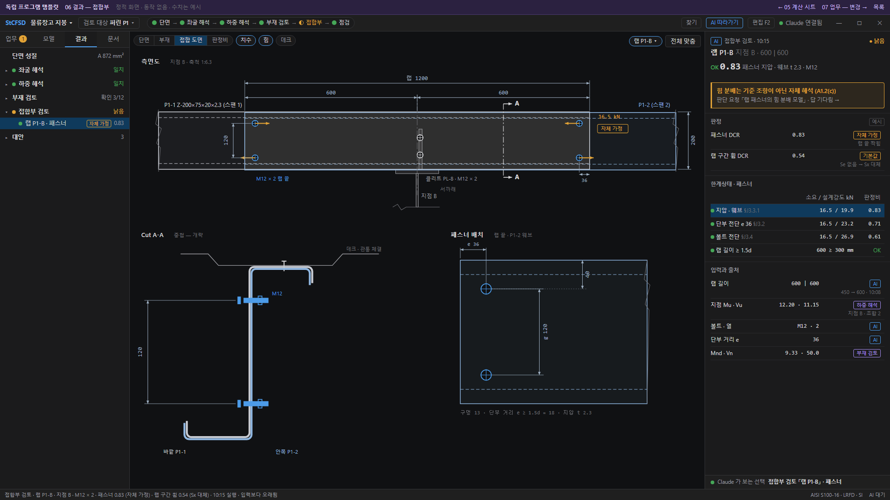
06 결과 — 접합부랩 측면도 · Cut A-A · 패스너 배치, 자체 가정 알림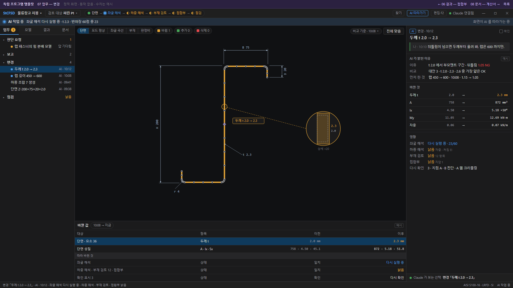
07 업무 — 변경AI 작업 중. t 2.0 → 2.3 과 그 영향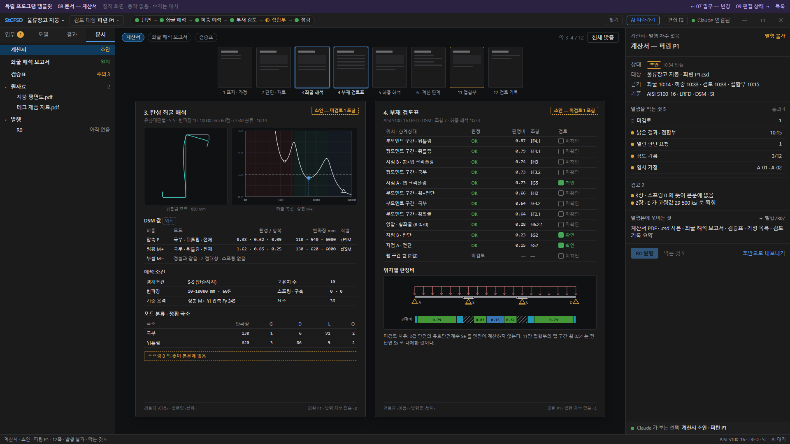
08 문서 — 계산서쪽 미리보기와 발행을 막는 것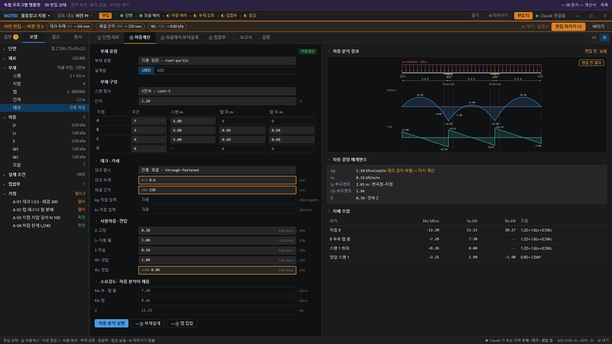
09 편집 상태지금의 6탭 입력 화면을 그 자리에, 「이번 편집 — 바뀐 것 3」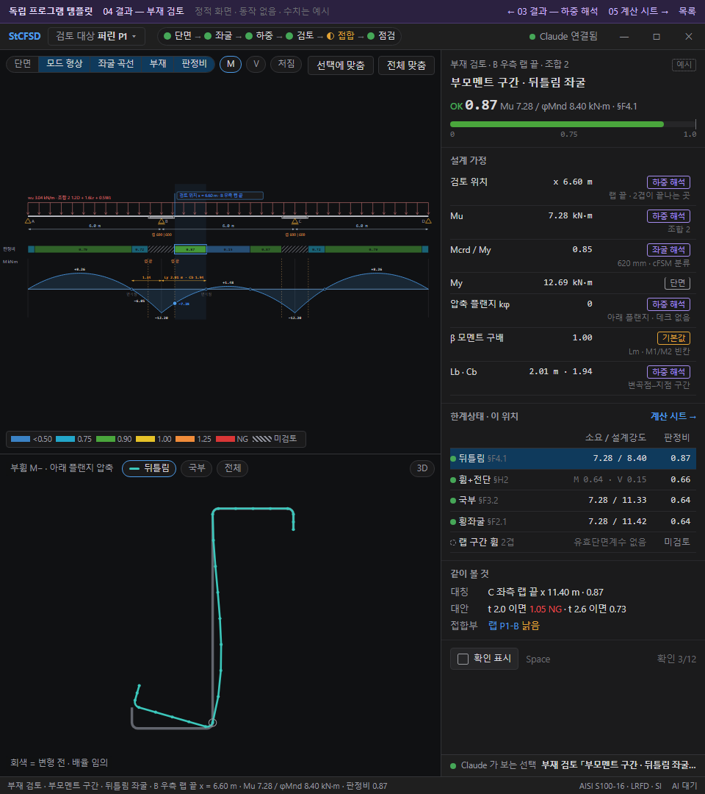
04 좁은 창 (960 px)트리가 접히고 보기와 정보만 남는다창의 틀
제목 표시줄 — StCFSD · 프로젝트 ▾ · 검토 대상 ▾ · 단면 ● → 좌굴 ● → 하중 ● → 검토 ● → 접합부 ◐ → 점검 ● | 찾기 · AI 따라가기 · 편집 F2 · Claude 연결
(AI 작업 중일 때만) AI 띠 · (편집 상태일 때만) 이번 편집 띠
업무 | 모델 | 결과 | 문서
트리
트리
보기
단면 · 모드 형상 · 좌굴 곡선 · 부재 · 판정비 · 접합 도면 중 둘을 위아래로
아래: 표
단면 · 모드 형상 · 좌굴 곡선 · 부재 · 판정비 · 접합 도면 중 둘을 위아래로
아래: 표
정보
아래 한 줄: Claude 가 보는 선택
아래 한 줄: Claude 가 보는 선택
상태 표시줄 — 고른 것 · AISI S100-16 · LRFD · SI · AI 대기
진행 띠
| 일치 | 결과가 지금 입력과 맞는다. |
| 낡음 | 입력이 바뀐 뒤 다시 돌리지 않았다. 값은 같을 수 있다. |
| 실행 안 함 | 결과가 없다. |
| 실행 중 | AI 가 다시 돌리는 중. |
길잡이가 아니라 상태 표시다. 순서를 막지 않는다. 누르면 트리의 그 가지를 고른다.
우클릭 메뉴
| 어디서 | 메뉴에 있는 것 |
|---|---|
| 트리 · 한계상태 | 보기에서 찾기, 이 위치만 보기, 계산 시트 열기 (Enter), 표에서 보기, 확인 표시 (Space), 이름 복사 |
| 트리 · 모델 값 | 출처 보기, 표에서 보기, 복사 |
| 보기의 빈 곳 | 전체 맞춤, 표시 항목, 그림 복사 |
| 표의 줄 | 보기에서 찾기, 행 복사, CSV |
보는 일과 확인 표시만 있다. 값 바꾸기 · 다시 실행 · 대안 만들기는 Claude 에게 말로 한다. 펼친 모습: 01 · 03 · 04
표시
| 예시 | 지어낸 수치. 이 템플릿의 수치는 모두 예시다. |
| 기본값 | 입력 기본값이 그대로 쓰였다. 아무도 정하지 않았다. |
| AI 사용자 | AI 가 정했다 · 사람이 정했다. |
| 하중 해석 좌굴 해석 | 다른 결과에서 자동으로 나왔다. 옆에 까닭 (예: 변곡점–지점 구간). |
| 단면 | 단면 성질에서 나왔다. |
| 자체 가정 | 기준 조항이 아닌 자체 해석. 판단 요청에 걸려 있다. |
| 미확인 확인 | 사람의 검토 표시. |
설명은 README.md. 지금 GUI 의 전수 조사는 docs/reviews/20261122-desktop-survey/G2-stcfsd-gui-inventory.md.